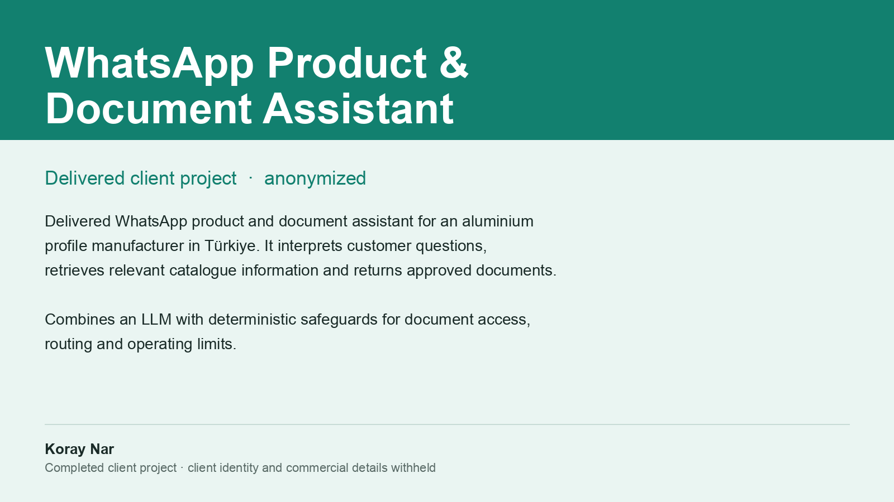

Delivered WhatsApp product and document assistant for an aluminium profile manufacturer in Türkiye. It interprets customer questions, retrieves relevant catalogue information and returns approved documents.
The design combines an LLM with deterministic safeguards for document access, routing and operating limits — so what the customer receives is an approved document from the real catalogue rather than generated text. It shipped with a daily spend cap, a per-customer cap and a rollback path.
Completed client project. Client identity and commercial details are withheld.